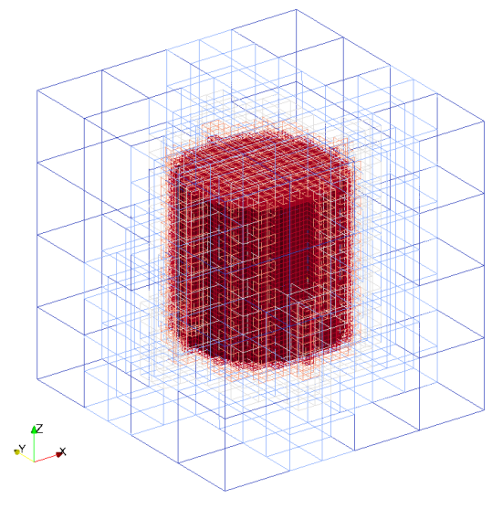

Stl files can be used as geometry kind. At first, seeder loads the triangles from stl files to the temporary stl_data type and then each triangle in the stl_data is converted to sdr_triangle_type. Stl geometry requires filename and stl file format. If file format is not provided, default is set to binary. Valid definition:
geometry={
kind='stl',
object={
filename='cube.stl',
format = 'ascii' -- if not provided, default is binary
}
}
geometry={
kind='stl',
object={
{
filename = 'cube.stl'
},
{
filename = 'cylinder.stl'
}
}
}
Seeder file to create mesh with single 'stl' geometry:
\include testsuite/stl/seeder.lua
Mesh with 'stl' geometry created by seeder file:

Example lua file is available at testsuite/stl/seeder.lua